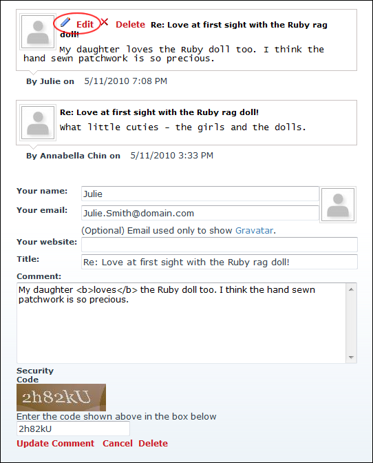

Editing Your Comments
How to edit comments you added to a blog entry on the Blog module. Note: You can only edit your comments if you were logged in when adding them and if you are currently logged in.
- Locate the required blog entry. See "Viewing Blog Entries for a Month", See "Viewing Blog Entries for a Single Date", or See "Viewing Recent Entries for a Single Blog".
- Click the
 Comments link to the bottom left corner of the blog entry. This displays the post in full with all related comments displayed below.
Comments link to the bottom left corner of the blog entry. This displays the post in full with all related comments displayed below.
- Click the Edit
 button or the Edit link beside the comment to be edited. This displays the comment in the comment entry section below.
button or the Edit link beside the comment to be edited. This displays the comment in the comment entry section below.

- Edit the comment as required.
- Optional. In the Security Code text box, enter the displayed security code.
- Click the Update Comment link.
- Optional. If comments require approval a dialog box reading "Your comment MUST be approved by the blog owner BEFORE it is displayed on the website. Do you wish to save your comment now?" is displayed.
-
If approval isn't required, the edited comment is displayed below the entry.